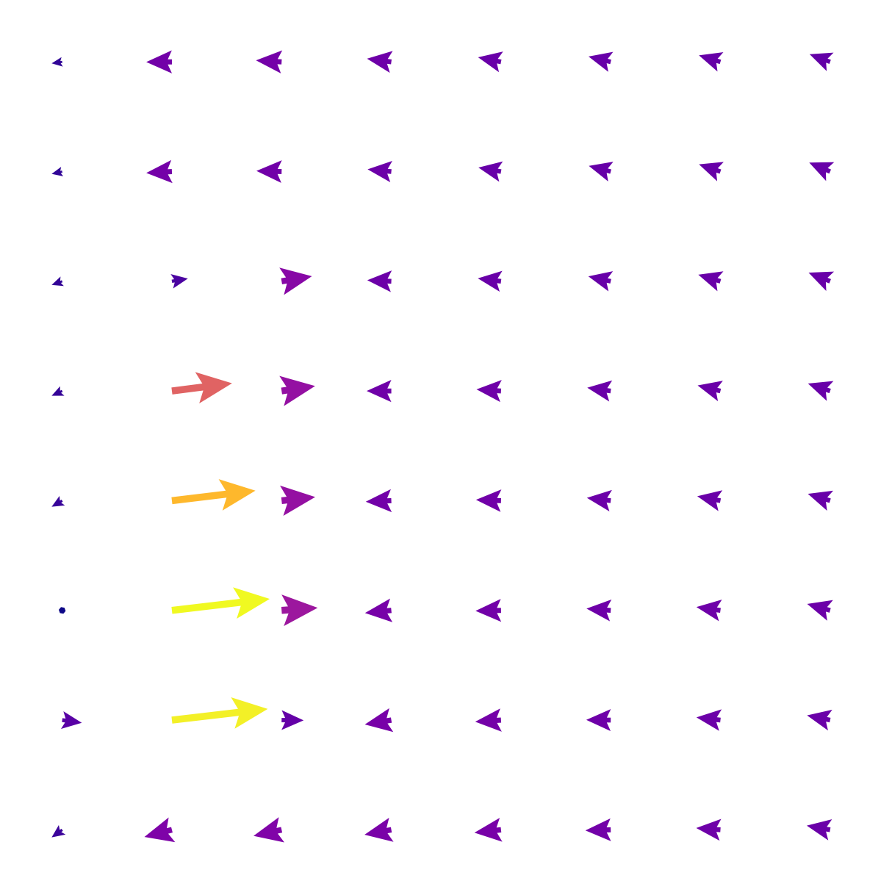
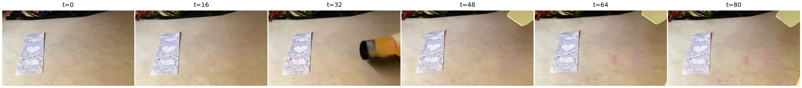
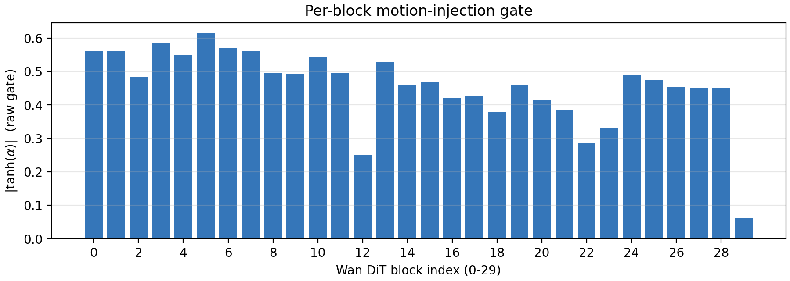

Abstract
Controllable video generation typically conditions a diffusion backbone on dense motion trajectories, camera paths, or optical flow — interfaces that are hard for users to specify. We present ViMoLa (Video Motion Language), which predicts a compact set of discrete motion tokens from language alone and injects them into a frozen Wan 2.2 image-to-video backbone through zero-gated adapters. A spatial VQ-VAE compresses CoTracker fields into 64 tokens; a lightweight text-to-motion transformer predicts those tokens from a caption; and zero-initialized cross-attention adapters steer every DiT block without editing the pretrained weights. At inference the only inputs are text and a first frame — no tracks, drags, or camera paths.
Method



Code & weights
All links live on the GitHub repo: ostadabbas/ViMoLa. Pretrained checkpoints (tokenizer, T2M, adapters) are on Hugging Face: bishoygaloaa/ViMoLa.
git clone https://github.com/ostadabbas/ViMoLa.git
cd ViMoLa
pip install -r requirements.txt
python scripts/download_weights.py --out checkpoints
bash scripts/infer.sh assets/sisyphus_input.png "pushing a boulder up a steep hill"